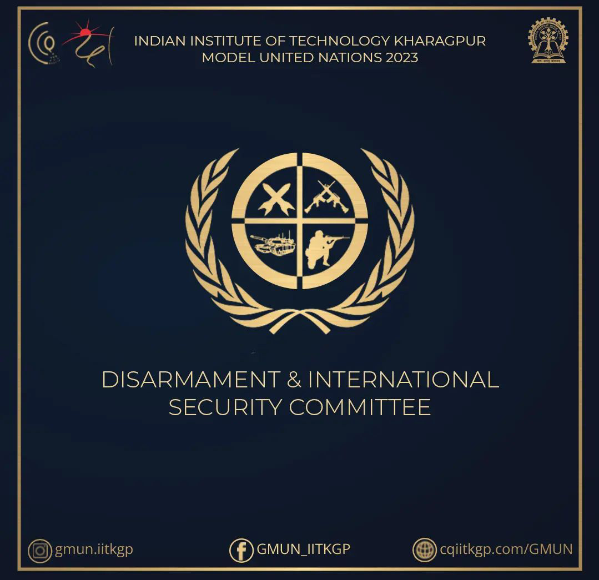
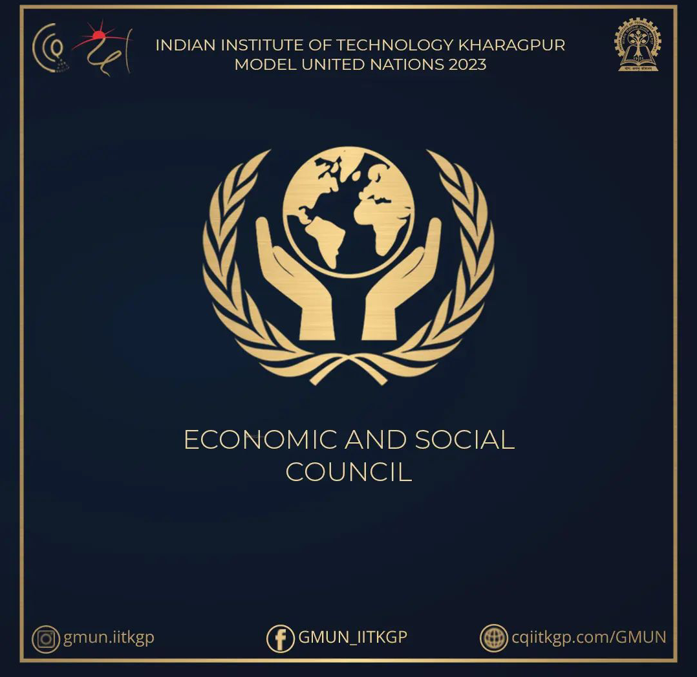
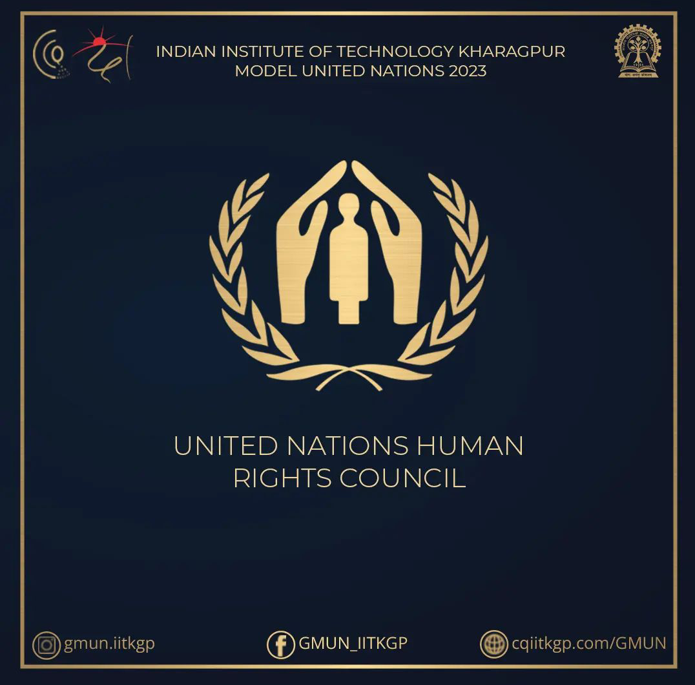
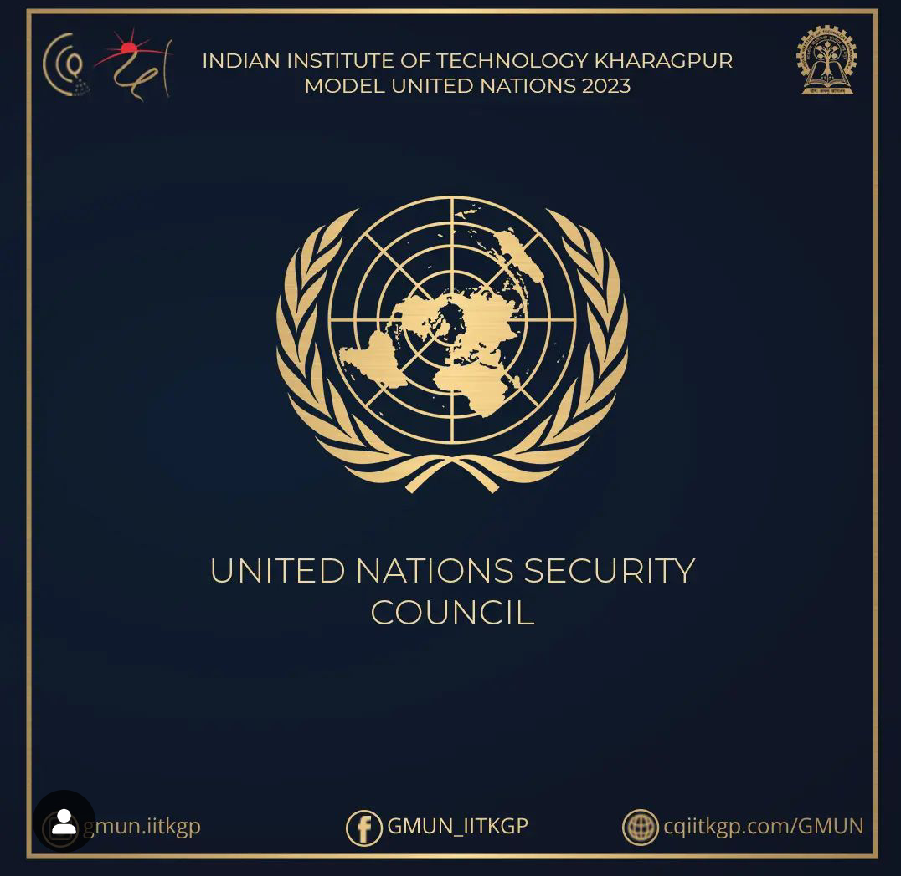

DISARMAMENT & INTERNATIONAL SECURITY COMMITEE
The purpose of DISEC in the General Assembly is to establish 'general principles of cooperation in the maintenance of international peace and security, including the principles governing disarmament and the regulation of armaments
ECONOMIC AND SOCIAL COUNCIL
It Serves as the central forum for discussing international economic and social issues, and formulating policy recommendations addressed to member states and the United Nations System.
UNITED NATIONS HUMAN RIGHTS COUNCIL
The Human Rights Council is an intergovernmental body within the United Nations system responsible for strengthening the promotion and protection of human rights around the globe and for addressing situations of human rights violations and making recommendations on them.
UNITED NATION SECURITY COUNCIL
The Security Council is one of the six main organs of the United Nations established under the UN Charter. Its primary responsibility is maintaining international peace and security. The Council has 15 Members (5 permanent and 10 non-permanent members).
COMMISSION ON THE STATUS OF WOMEN

The Commission on the Status of Women (CSW) is the principal global intergovernmental body exclusively dedicated to the promotion of gender equality and the empowerment of women. A functional commission of the Economic and Social Council (ECOSOC), it was established by ECOSOC resolution 11(II) of 21 June 1946.
INTERNATIONAL CIVIL AVIATION ORGANISATION

A specialized agency of the United Nations, the International Civil Aviation Organization (ICAO) was created in 1944 to promote the safe and orderly development of international civil aviation throughout the world.